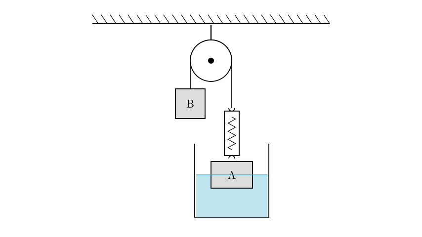
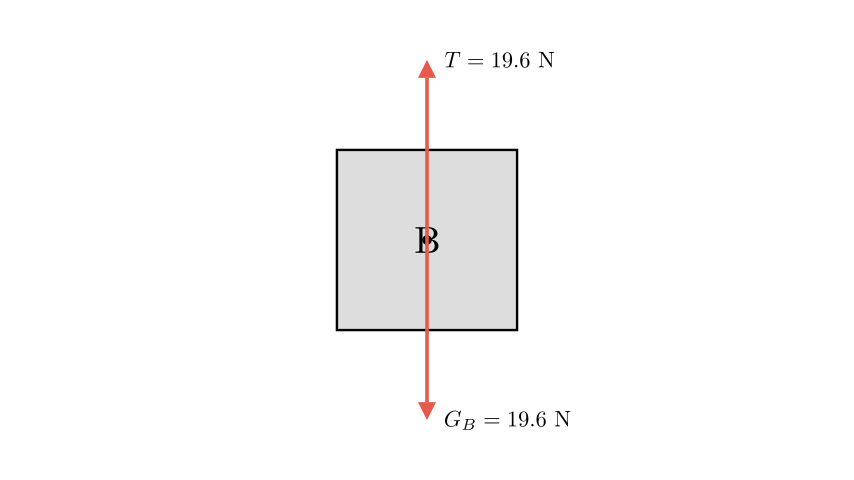
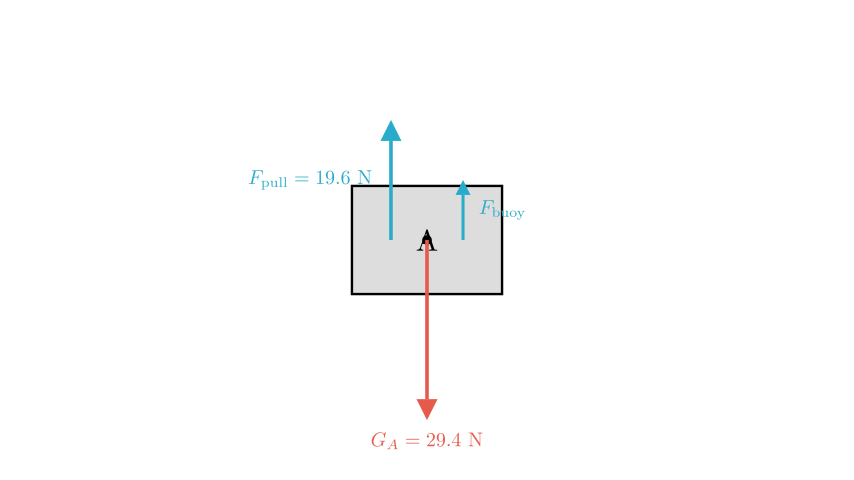
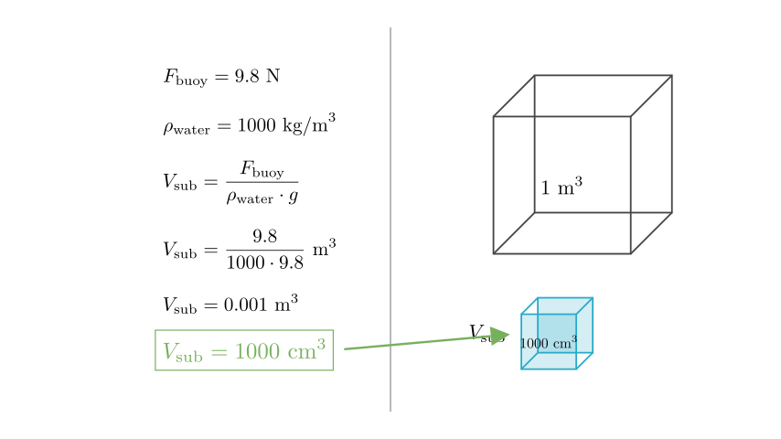

Problem Statement: As shown in the figure, object A immersed in water has a mass of $3\text{ kg}$, and object B has a mass of $2\text{ kg}$. The entire system is in a static (stationary) state. The weight of the spring scale itself is negligible. Which of the following statements is correct? ($g=9.8\text{ N/kg}$)
A. The reading of the spring scale is $19.6\text{ N}$. B. The volume of object A immersed in the water is $500\text{ cm}^3$. C. Object A is in a non-equilibrium state. D. The gravity acting on object B and the pulling force of B on the rope are a pair of balanced forces.
Solution Approach: To solve this, we will apply Newton's Laws of Motion and Archimedes' Principle. 1. Analyze the forces acting on object B to determine the tension in the rope and the reading on the spring scale. 2. Analyze the forces acting on object A to determine the buoyant force and the submerged volume. 3. Evaluate each option based on these calculations.

Step 1: Analyzing Object B
Let's look at object B first. Since the problem states the whole system is static, object B is stationary. This means it is in equilibrium.
We need to calculate the gravity acting on B ($G_B$): $$G_B = m_B \times g$$ $$G_B = 2\text{ kg} \times 9.8\text{ N/kg} = 19.6\text{ N}$$
Since B is stationary, the tension in the rope ($T$) pulling it upward must equal the force of gravity pulling it downward. $$T = G_B = 19.6\text{ N}$$
Evaluating Option A: The spring scale measures the tension in the rope. Since we found $T = 19.6\text{ N}$, the reading is indeed $19.6\text{ N}$. Therefore, Option A is Correct.
Evaluating Option D: Option D claims gravity on B and B's pull on the rope are balanced forces. - Balanced forces must act on the same object. - Gravity acts on B. - B's pull acts on the rope. Since these forces act on different objects, they cannot be balanced forces. (They are actually an interaction pair, but not an equilibrium pair). Thus, Option D is incorrect.

Step 2: Analyzing Object A
Now let's analyze object A.
Evaluating Option C: The problem states the system is "static." By definition, if an object is static (at rest), it is in equilibrium. Therefore, object A is in an equilibrium state. Option C is incorrect.
To check Option B, we need to analyze the forces on A. Forces acting on A: 1. Gravity ($G_A$) acting downward. 2. Tension from the spring scale ($F_{\text{pull}}$) acting upward. 3. Buoyant force ($F_{\text{buoy}}$) acting upward.
First, calculate the gravity on A: $$G_A = m_A \times g$$ $$G_A = 3\text{ kg} \times 9.8\text{ N/kg} = 29.4\text{ N}$$

Step 3: Calculating Buoyancy and Volume
Since A is in equilibrium, the upward forces equal the downward forces: $$F_{\text{pull}} + F_{\text{buoy}} = G_A$$
We know $F_{\text{pull}}$ is the same as the tension we found earlier ($19.6\text{ N}$). $$19.6\text{ N} + F_{\text{buoy}} = 29.4\text{ N}$$ $$F_{\text{buoy}} = 29.4\text{ N} - 19.6\text{ N} = 9.8\text{ N}$$
Evaluating Option B: We use Archimedes' principle to find the submerged volume ($V_{\text{sub}}$). $$F_{\text{buoy}} = \rho_{\text{water}} \cdot g \cdot V_{\text{sub}}$$
Where $\rho_{\text{water}} = 1000\text{ kg/m}^3$ (standard density of water).
$$9.8\text{ N} = 1000\text{ kg/m}^3 \times 9.8\text{ N/kg} \times V_{\text{sub}}$$ $$V_{\text{sub}} = \frac{9.8}{1000 \times 9.8} = \frac{1}{1000}\text{ m}^3$$
Now, convert cubic meters to cubic centimeters ($1\text{ m}^3 = 1,000,000\text{ cm}^3$): $$V_{\text{sub}} = 0.001\text{ m}^3 \times 1,000,000\text{ cm}^3/\text{m}^3 = 1000\text{ cm}^3$$
Option B claims the volume is $500\text{ cm}^3$. Since our calculated volume is $1000\text{ cm}^3$, Option B is incorrect.

Final Conclusion:
Correct Answer: A